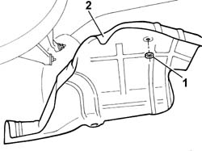
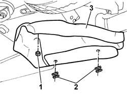
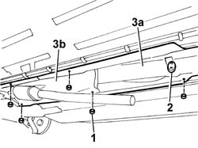

1076A40 Exhaust pipe HEAT SHIELDS - R.R.
- Path
- Procedures > 10 ENGINE > 1076 EXHAUST PIPES AND SILENCERS > 1076A exhaust pipe fastenings and protections > 1076A40 Exhaust pipe HEAT SHIELDS - R.R.
- Kind
- repair procedure (removal / refitting; the operation number is the code)
- Applies to
- engines: 2.4 JTD 10V; all production periods
- Interactive page
- https://sloeber94.github.io/elrnDB-lThss/en/#/76017
Applies to: all engines; all production periods
 Removing
Removing
 Refitting
Refitting- Position the vehicle on the lift.
See in Op. 1076B20
1. Undo the fixing nuts.
2. Remove the exhaust pipe rear heat shield.

Applies to: all engines; all production periods
1. Undo the fixing nuts.
2. Remove the retaining springs fastening the shield to the tank.
3. Remove the exhaust pipe intermediate heat shield.

Applies to: all engines; all production periods
1. Undo the fixing nuts.
2. Remove the side flexible mounting supporting the exhaust pipe.
3. Remove the front heat shield for the exhaust pipe (3a) and the heat shield for the catalytic converter (3b).

Applies to: all engines; all production periods
Refitting
Removing- Fit the front heat shield for the exhaust pipe and the heat shield for the catalytic converter.
- Tighten the nuts fixing the heat shields.
- Fit the side flexible mounting supporting the exhaust pipe.
- Fit the exhaust pipe intermediate heat shield.
- Tighten the nuts fixing the intermediate heat shield.
- Fasten the shield to the tank using the springs.
- Fit the exhaust pipe rear heat shield.
- Tighten the nuts fixing the rear heat shield.
See in Op. 1076B20
- Remove the vehicle from the lift.